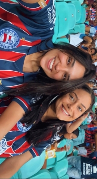
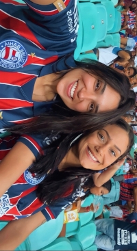

 
Porque era ela, porque era eu...
Assim como nessa canção de Chico Burarque, eu também não sei explicar muito bem nós duas,
simplismente, é você e eu... sem dúvidas uma junção que ao meu ver tinha que acontecer,
muito além do físico, um encontro de alma.
Hoje completam 365 dias (um pouco mais) que fizemos a escolha de nos escolher todos os dias.
Mas não só, desde então a gente vem evoluindo muito individualmente e como um casal... trocamos muitos aprendizados ao longo desse tempo e hoje sem dúvidas olho para trás e tenho a certeza de que esse dia deve ser realmente celebrado, pois amadurecemos e crescemos muitos apesar de tudo e também por causa de tudo.
Gostaria de agradecer por me mostrar a dimensão de profundidade e intimidade que uma relação pode ter. De me dar coragem para me sentir vulnerável e mostrar que isso pode ser bom. Mas, a cima de tudo, obrigada por me fazer entender o poder do amor como um combustivél nas nossas vidas, colocando a gente sempre em evolução.
Torço todos os dias para que continue sendo assim, eu e você, nós, do nosso jeitinho, com erros mas sempre acertando mais que errando. Com nossas diferenças que de alguma forma se encaixam tão bem. Com nossas individualidades, divergências, mas também com nossas concordancias e horas de desabafos e conversas intemrináveis.
Desejo muita sorte para nós, mas para além, desejo muita disposição e que a gente siga escolhendo uma a outra todos os dias e escolhendo essa relação. Porque relacionamento é uma decisão e construção e hoje eu sou muito mais feliz por ter decidio e e escolhido investir nessa relação e o mias importante... ter escolhido você.
Por fim, queria finalizar deixando claro o quanto eu me sinto abençoada por Deus ter me proporcionado encontrar você e ter sido tão favorável para nossa relação. Me sinto sortuda em compartilhar a vida, o dia a dia, a parte boa e ruim... com você e que bom que é você. Como já te falei, você tá muito além do que um dia eu sonhei para mim, minha namorada, amiga, parceira e o amor da minhda vida.
Obriga por tudo e por tanto, o tempo todo. Te amo, admiro e sou grata pelo nosso relaconamento. Feliz primeiro ano de infinitos outros que eu torço e acredito que vão vir, meu amô!❤️❤️❤️